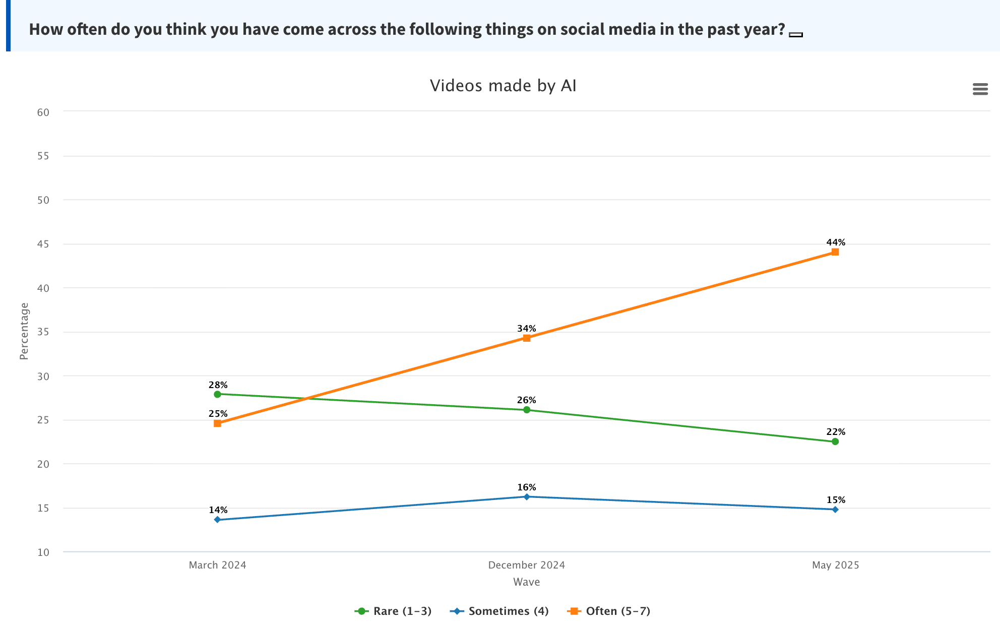
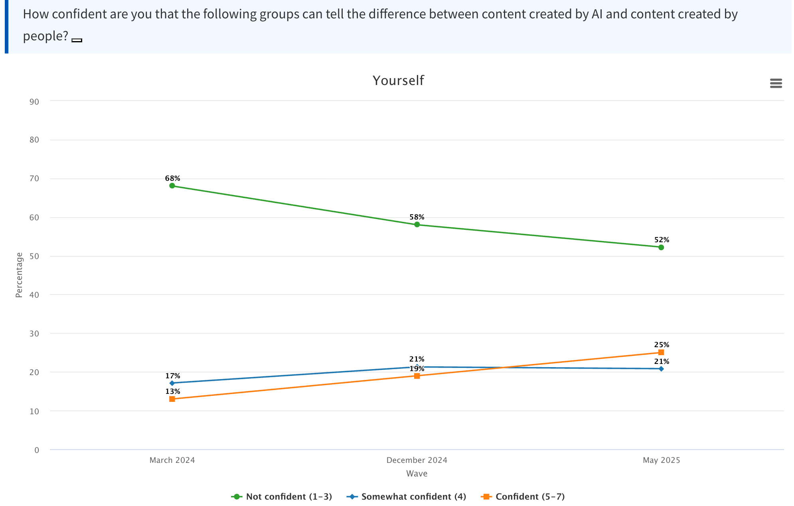

Findings from the AI Opinion Monitor (2024–2025)
How Confident are People in the Netherlands in their Ability to Detect AI?
The AI Opinion Monitor (developed by the AlgoSoc Consortium) adds crucial context to the CampAIgn Tracker by showing how people in the Netherlands perceive and navigate the growing presence of AI in public life. While the CampAIgn Tracks sheds light on what kind of AI-generated images and videos circulate ahead of the 2025 election, the Opinion Monitor reveals how citizens themselves experience and understand this shift. For the past two years, it has followed changes in how often people encounter AI-generated content, how confident they feel in recognizing it, and who they think should be held responsible for it.

Our most recent findings show a sharp rise in exposure to AI-generated video—technology that was until recently niche but is now widely accessible, for example via OpenAI’s Sora text-to-video model. See Figure 1. In our AI Opinion Monitor we find that the share of people who say they often see AI-generated videos nearly doubled, from 25% in March 2024 to 44% in May 2025. For AI-generated images, the increase is even sharper, from 24% to 53%. Encounters are most common among younger citizens: 76% of those aged 16–29 report frequently seeing AI-generated content. Political orientation also plays a role, with 61% of left-leaning respondents versus 53% of right-leaning respondents saying they see such material often.

As shown in ?@fig-confidence, while exposure has grown, people’s confidence in spotting AI content has not collapsed in the way many feared, in fact people have increasingly become more confident in their ability to detect AI-generated content. In 2024, 68% said they were not confident in their ability to detect AI. By mid-2025, that figure dropped to 52%. Still, skepticism about others’ ability remains widespread. Journalists are the most trusted group to recognize AI content, but even here, only 27% of respondents express confidence. Trust is lowest in the general public: 76% say they don’t trust ordinary people to detect AI—followed by friends and family (69%).
And when it comes to accountability, most Dutch citizens point the finger at those who create the content: 74% believe the individual who made the AI-generated material should be held responsible. Still, 67% also blame social media platforms for allowing such content to spread, and 59% say the government bears some responsibility for not preventing or regulating it.
Check out and follow the Dutch AI Opinion Monitor to play around with the data and get more in-depth insights yourself!